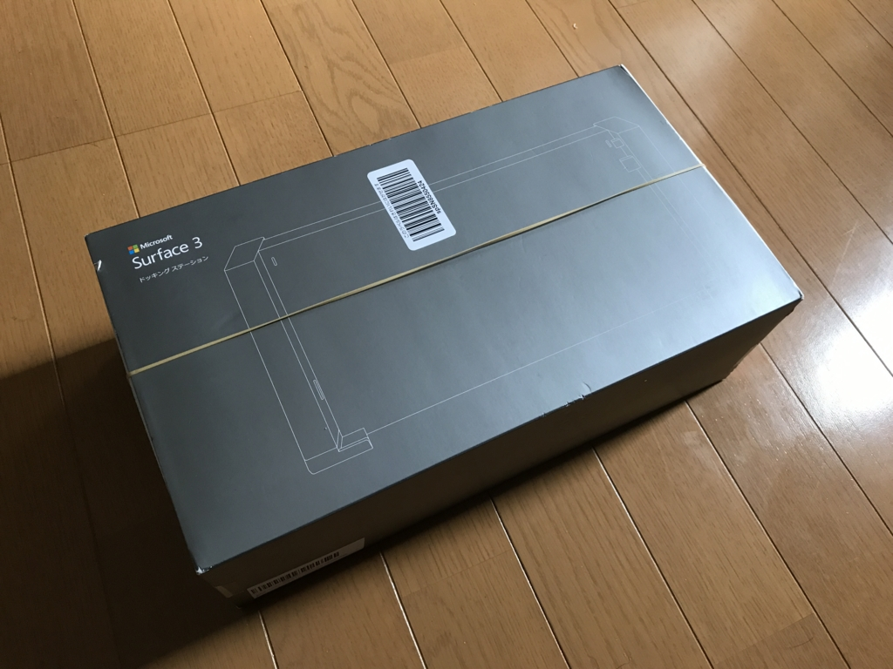
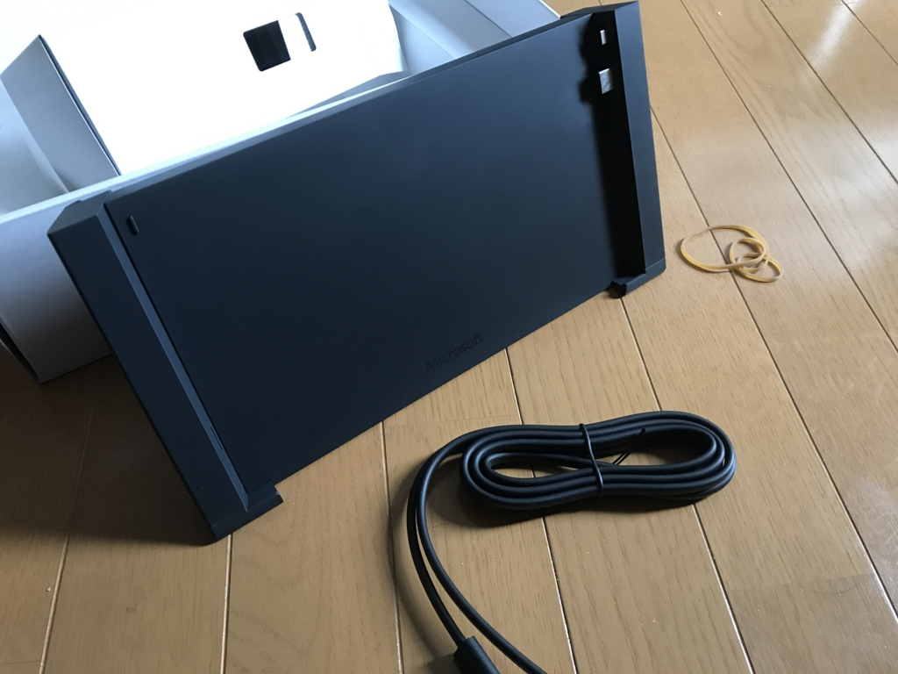
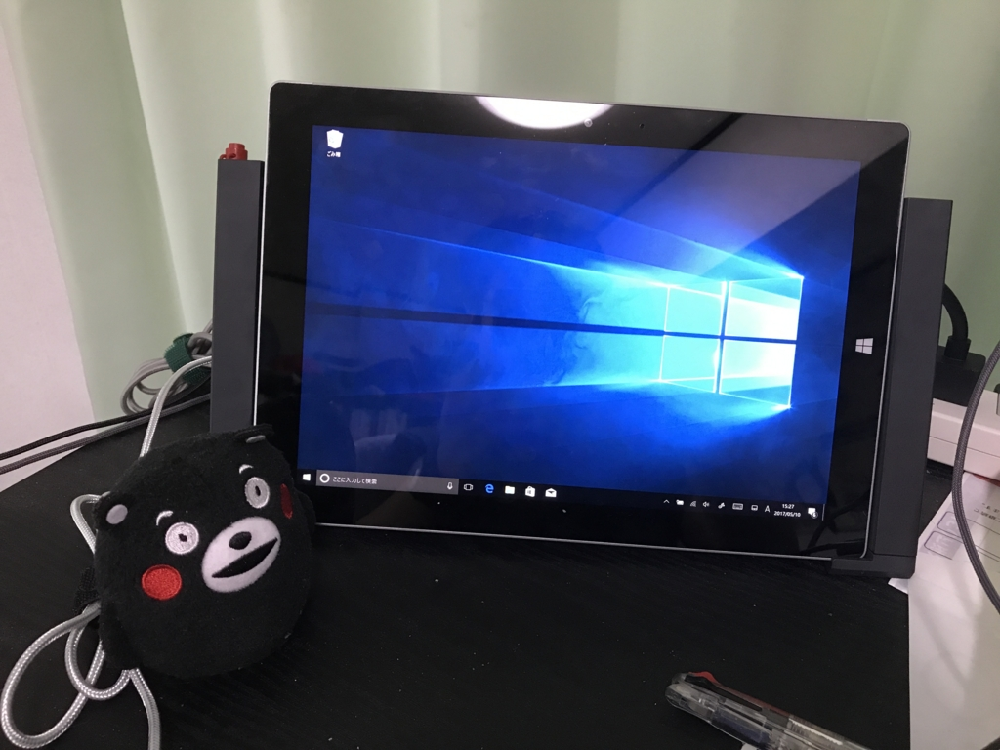

いまさらながら Surface 3 のドックを買った
公開日：

ポテンシャルでいえば歴代最高端末（タッチ、ペン、SIM 内蔵！）なのに、電源周りのトラブルから何度叩き割ろうかと思ったか知れない我が愛機・Surface 3 ちゃんですが、たまたま密林を徘徊していた時にドックが安くなっているのを発見して衝動買いしてしまいました。

マイクロソフト Surface 3 ドッキング ステーション ブラック GJ3-00007
- 出版社/メーカー: マイクロソフト
- メディア: エレクトロニクス
- この商品を含むブログを見る
ヨドバシによると“販売終了時の価格：￥25,570（税込）”だそうですが、今なら9,000円代で買えるようです。25,000 円なら絶対に買わないけど（ちなみに Surface 3 は最安モデルで定価 100,000 円ぐらいです。本体の 1/4 もするとか、頭おかしい）、10,000 円ならありかなー。

長い間店頭で不遇をかこっていたのか、外箱は少しくたびれていましたが、中身はぜんぜん大丈夫。ドックと電源ケーブルだけという、非常にシンプルなパッケージです。
早速 USB ポートと HDMI ポートが刺さるよう、本体を左から右へスライドさせながらハメてみました。

なかなかいい感じ。充電もちゃんと行われていて、mini-USB なんかよりもよっぽど信頼感ある。ドックから外してもタスクトレイの電源アイコンがバッテリーモードにならないのは気になったけど、電源ボタンをプチプチすれば反映されるようになるので、そんなに問題ではない感じ。
このドックを使うと、ポート類も充実します（今のところ活用してないけど）。
- USB 3.0 ポート×2、USB 2.0 ポート×2
- ギガビット イーサネット ポート
- 3.5 mm オーディオ入出力端子
- Mini DisplayPort ビデオ出力
- セキュリティ ロック スロット
- Surface ペン用の収納部（マグネット式）
Surface ペンをマグネットでひっつけられるのが結構お気に入りです。あとは USB 切り替え機でも導入して、デスクトップとマウス＆キーボードを共有したいですね。これで“気が向いたときにペンでメモが取れる Twitter/Netflix/Amazon ビューワー機”が完成だ！（公開停止にした Abema アプリも入れたから予約視聴もできるぜ）
あと、よく問題にされる角度が調節不能な件ですが、個人的にはとくに気にならないかな。ペンを使うには急傾斜すぎるけど、タッチ＆卓上ビューワーとしてはごく自然な角度だと思う。とりあえず、買ってよかったかなって感じ。